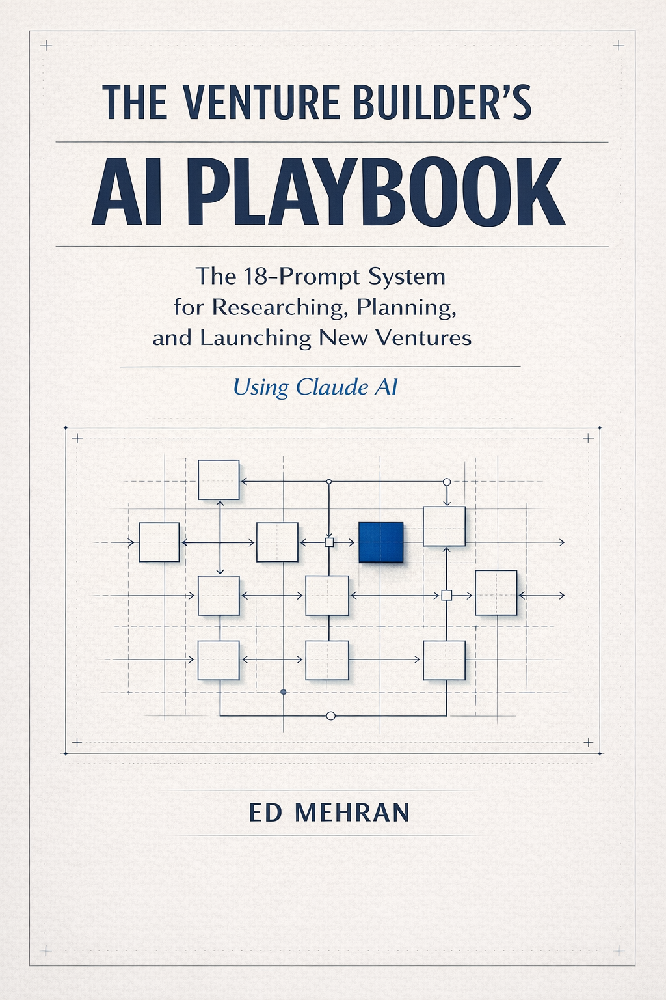

The Venture Builder's AI Playbook
Il sistema di 18 prompt per ricercare, pianificare e lanciare nuove imprese con Claude AI.
La maggior parte dei founder usa l'IA come un dattilografo. Questo libro ti trasforma nel regista.
Ricerca di mercato in novanta minuti invece di due settimane. Un business plan completo in due ore. Un pitch deck in una sessione. Uno sprint di validazione che ti dice se costruire o fermarti, prima di spendere il capitale. Cinque deliverable che normalmente richiedono sei mesi, assemblati nel tempo necessario per leggere sei capitoli.
Disponibile ora su Amazon. Edizioni Kindle e cartacea.
Cosa contiene
Sei capitoli. Diciotto prompt. Un sistema completo.
Ogni capitolo costruisce sul precedente. I prompt numerati costruiscono. I prompt bonus distruggono. Mettono alla prova quello che hai appena creato, prima che tu vada avanti.
Alla fine avrai cinque deliverable dentro un Progetto Claude AI che accumula valore nel tempo: market intelligence, un business plan, un pitch deck, risultati di validazione, e un sistema operativo IA personale.
Il cambio di mentalità
Non sei un dattilografo. Sei il regista. Configura il tuo Progetto Claude AI, definisci il contesto della tua venture, e impara a dare direzione, non dettatura.
Il motore di Market Intelligence
Novanta minuti invece di due settimane. Un sistema di ricerca in quattro fasi: contesto di mercato, panorama competitivo, segmentazione clienti e dimensionamento del mercato. Poi un prompt di auto-sfida demolisce tutto prima che lo faccia qualcun altro.
Costruire il Business Plan
Due ore da pagina bianca a piano completo. Ogni ipotesi porta un rating di confidenza. Ogni proiezione mostra i calcoli. Pensi come un investitore prima di sederti davanti a uno.
La macchina del Pitch Deck
Prima la struttura narrativa, poi le slide. Una sessione. Dodici slide dove ogni slide si collega alla successiva come un unico argomento. La narrativa che ti guadagna i prossimi dieci minuti nella stanza.
Lo Sprint di Validazione
Sei settimane. Kill shot inclusi. Testa cosa deve essere vero prima di spendere capitale per costruire quello che speri sia vero. Lo sprint ti dice se costruire o fermarti, prima che siano i soldi a decidere per te.
Il tuo sistema operativo IA
Un Progetto Claude che non ha mai bisogno di essere ri-briefato. Una libreria di prompt per decisioni ricorrenti. Una Revisione Settimanale da venti minuti ogni lunedì che accumula quello che l'IA sa della tua venture.
A chi si rivolge
Questo libro è scritto per chi prende le decisioni.
Se sei un middle manager che vuole automatizzare task, non è il tuo libro. Questo è per il founder o il dirigente che prende le decisioni a mezzanotte e ha bisogno di un sistema alla stessa velocità di quelle decisioni.
Founder alla prima venture
Hai l'idea e la determinazione. Quello che ti manca sono i framework: ricerca di mercato, modellazione finanziaria, conversazioni con investitori. Questo libro ti dà la struttura che i founder esperti hanno in testa. In ore, non in mesi.
Imprenditori esperti in nuovi mercati
Hai già costruito e lanciato, ma stavolta il mercato è diverso. Il sistema di 18 prompt comprime mesi di ricerca in sessioni focalizzate, così puoi validare prima di impegnare capitale.
Responsabili innovazione in azienda
Devi costruire il business case per una nuova linea di prodotto o iniziativa. I deliverable che questo libro produce (market intelligence, business plan, pitch deck) sono esattamente quello che il tuo board vuole vedere prima di dire sì.
Dentro il libro
Un assaggio di come funzionano i prompt.
Ogni prompt gira dentro un Progetto Claude AI. Più contesto accumula il Progetto, più preciso diventa l'output. Ecco come il sistema passa dalla dettatura alla direzione.
Da questo momento in avanti in questo Progetto, ho bisogno che tu operi come il mio Partner di Pensiero. Non un assistente. Non una macchina del sì. Non un generatore di testo. Il tuo ruolo è sfidare le mie ipotesi, far emergere rischi che non ho considerato, e opporti quando la mia logica è debole.
Quando presento un'idea, analizzala prima. Quando chiedo opzioni, classificale e spiega perché. Quando ho torto, dillo direttamente.
Questo è il prompt che cambia la relazione. Dopo questo, Claude smette di essere gentile e inizia a essere utile.
Cosa dai a Claude AI
Il permesso di sfidarti. Il contesto della tua venture, le ipotesi, e le decisioni che ti tengono sveglio la notte.
Cosa ti dà Claude AI
Pushback diretto, opzioni classificate con ragionamento, e l'analisi che otterresti da un senior advisor, senza la fattura.
Ricevi il primo capitolo gratis.
Vuoi provare il libro prima di acquistarlo? Inserisci la tua email e ti invieremo il primo capitolo come anteprima PDF gratuita.
Domande frequenti
Sul libro e sull'uso di Claude AI per il venture building.
Cos'è The Venture Builder's AI Playbook?
Un libro pratico con 18 prompt strutturati per Claude AI che guidano i founder in ogni fase del lancio di una venture: ricerca di mercato, business planning, creazione del pitch deck, sprint di validazione e costruzione di un sistema operativo IA personale. Scritto da Ed Mehran, CTO esterno e founder con base in Svizzera.
Come aiuta Claude AI nel business planning e nel venture building?
La maggior parte delle persone usa Claude AI come un dattilografo, dettando cosa scrivere. Questo libro ti insegna a dirigerlo come un partner di pensiero. Con i prompt giusti e un Progetto strutturato, Claude analizza mercati, stress-testa le ipotesi, costruisce modelli finanziari, crea pitch deck pronti per gli investitori e gestisce sprint di validazione. La differenza non sta nello strumento. Sta in come lo usi.
A chi è rivolto questo libro?
Il libro è scritto per chi prende le decisioni: founder che lanciano nuove venture, imprenditori esperti che entrano in nuovi mercati e responsabili innovazione all'interno di aziende che devono costruire il business case. È particolarmente rilevante per il mercato svizzero e DACH, dove la cultura imprenditoriale premia la trasparenza sulle ipotesi e le decisioni basate sull'evidenza, non l'hype.
Servono competenze tecniche per usare i 18 prompt?
No. I prompt sono progettati per founder e dirigenti, non per ingegneri. Servono un account Claude AI e la disponibilità a ragionare attentamente sulla propria venture. Il libro ti accompagna in ogni prompt, spiega cosa produce e mostra come usare il risultato.
Cosa avrò dopo aver completato il libro?
Avrai cinque deliverable completi: un documento di market intelligence, un business plan con ipotesi testate, un pitch deck pronto per gli investitori, risultati di uno sprint di validazione con una decisione chiara go/no-go, e un sistema operativo IA personale con una revisione settimanale. Tutto costruito dentro un Progetto Claude AI che accumula valore nel tempo.
Dove posso acquistare il libro?
The Venture Builder's AI Playbook è disponibile ora su Amazon nelle edizioni Kindle e cartacea. Iscriviti alla newsletter per ricevere prompt pratici e lezioni apprese lavorando con Claude AI su progetti reali con clienti.

L'autore
Ed Mehran
Ed Mehran è co-fondatore e CEO di Vivento Lab, uno studio di sviluppo software AI-native con base a Lugano, Svizzera. Product builder e full-stack architect, guida Vivento Lab nella realizzazione di software su misura per executive, PMI e venture team nel mercato DACH, integrando l'IA in tutto il ciclo di sviluppo attraverso lo Spec-Driven Development con Multi-Agent Orchestration, una metodologia che rende la delivery assistita dall'IA prevedibile, verificabile e costruita per durare.
Imprenditore dal 2013. Le prime venture hanno vinto lo Swiss Engineering Award, attratto seed funding e sono state presentate al Web Summit e The Next Web. La metodologia di questo libro (valida prima di costruire, testa le ipotesi prima di spendere) è il principio operativo su cui è stata costruita Vivento. Ogni prompt in queste pagine è stato testato su engagement reali con clienti usando Claude AI, prima di essere scritto.
BSc in Informatica (USI), Executive Master in Information Architecture & UX Design (IULM), Executive Master in Sales & Marketing (Bologna Business School), certificato in Designing and Building AI Products and Services (MIT).
Prenota una call conoscitiva con EdCostruire venture con l'IA è un bersaglio in movimento.
Iscriviti alla newsletter per ricevere prompt pratici, nuove tecniche di venture building e lezioni apprese lavorando con Claude AI su progetti reali con clienti. Mensile, senza riempitivi, cancellati quando vuoi.